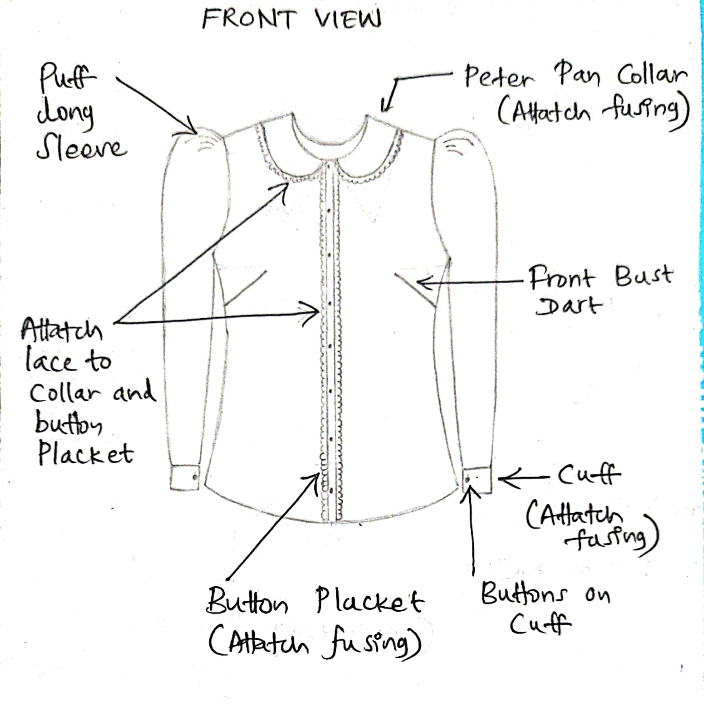
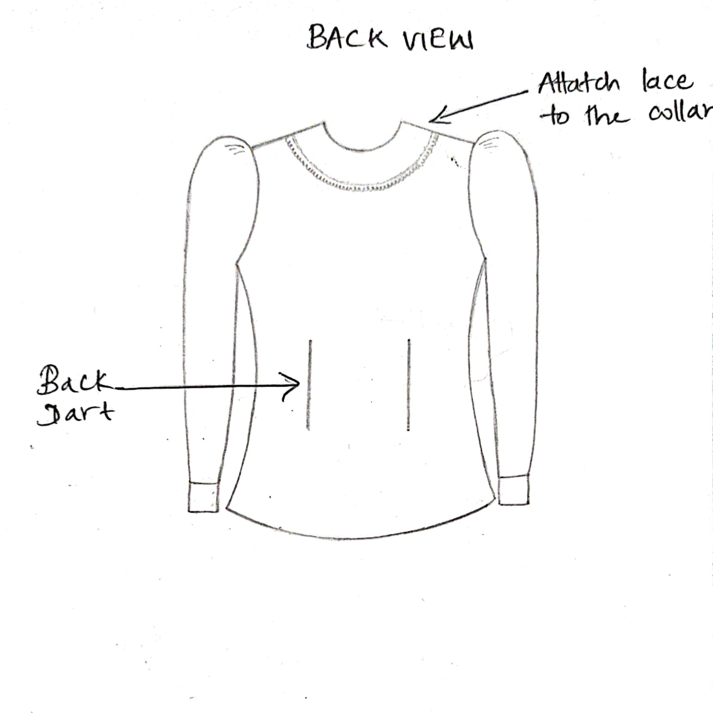
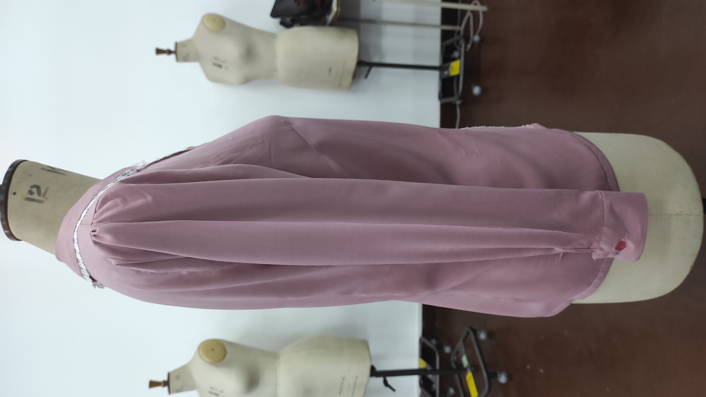
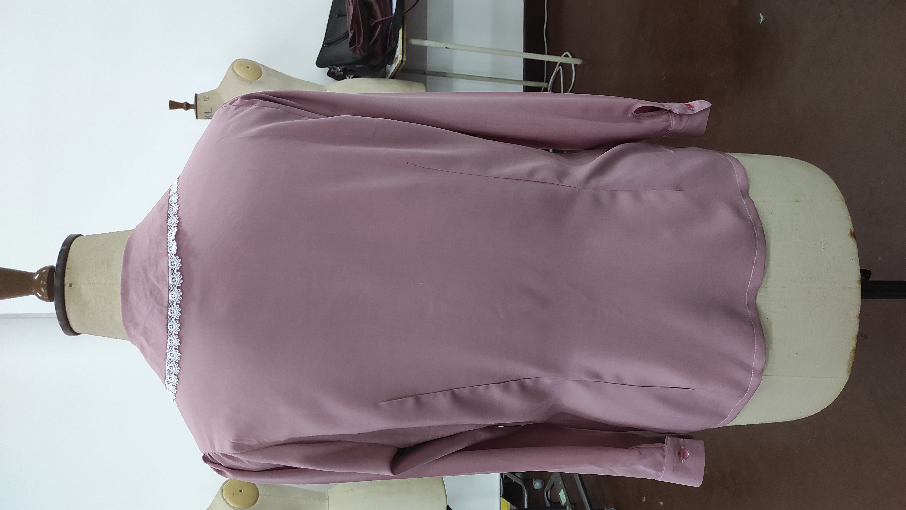
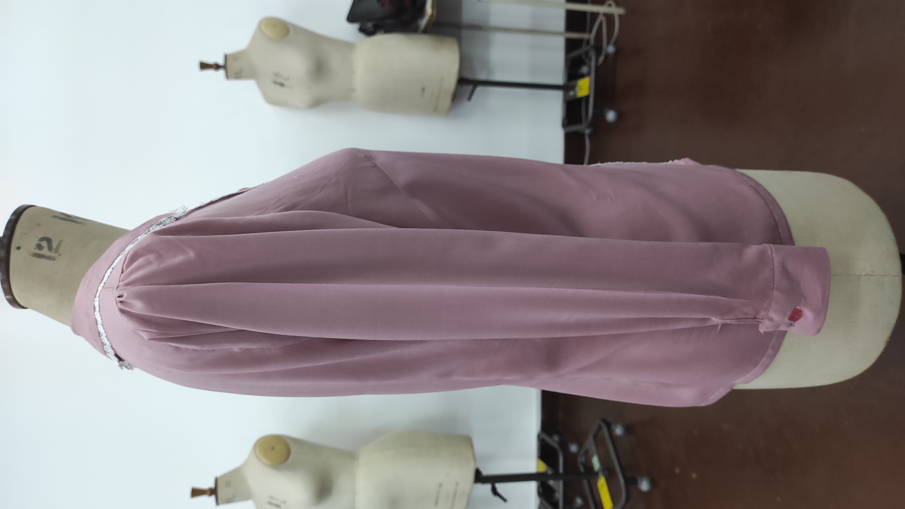
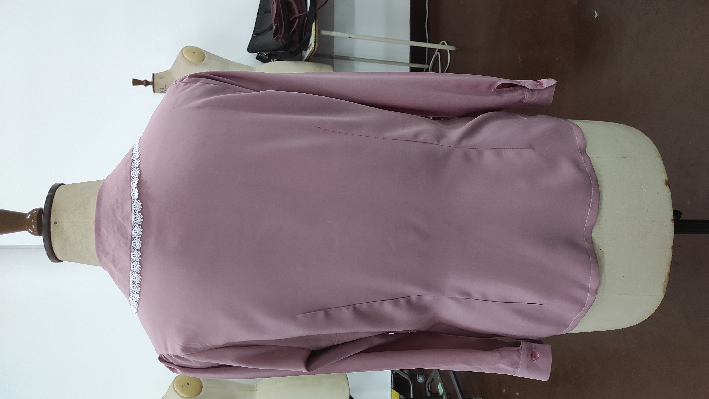
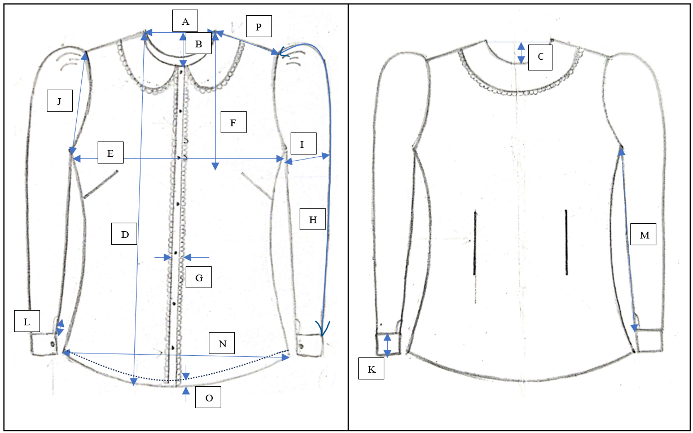

Technical Drawing
Front View
Back View
Garment Images
Toile Garment
Final Garment
 



Measurement Specifications
| Code | Dimension | Target (cm) |
|---|---|---|
| A | Neck width | 14.5 |
| B | Front neck drop | 6 |
| C | Back neck drop | 2 |
| D | HPS to Sweep | 64 |
| E | Chest width 1 inch down from arm hole | 47 |
| F | HPS to Bust level | 27 |
| G | Placket width | 2 |
| H | Sleeve length | 55 |
| I | Bicep width 1 inch down from armhole | 18 |
| J | Armhole straight | 7.5 |
| K | Cuff width | 5 |
| L | Sleeve placket height | 5 |
| M | Inseam length | 43 |
| N | Hip width at bottom | 50 |
| O | Hem width | 1 |
| P | Sleeve opening width | 18 |
How to Measure
Pattern Development
Basic patterns used to develop patterns
| Toile Sample | Final Garment |
|---|---|
| SIZE 12 BASIC BODICE BLOCK FRONT PANEL WITH DART (BUST – 88cm) |
SIZE 12 BASIC BODICE BLOCK FRONT PANEL WITH DART (BUST – 88cm) |
| SIZE 12 BASIC BODICE BLOCK BACK PANEL WITH DART BUST – 88cm |
SIZE 12 BASIC BODICE BLOCK BACK PANEL WITH DART BUST – 88cm |
| SIZE 12 BASIC BODICE BLOCK BACK PANEL WITH DART BUST – 94cm |
SIZE 12 BASIC BODICE BLOCK BACK PANEL WITH DART BUST – 94cm |
| SIZE 12 THE ONE-PIECE DRESS FRONT PANEL WITH DART BUST – 88cm |
SIZE 12 THE ONE-PIECE DRESS FRONT PANEL WITH DART BUST – 88cm |
| SIZE 12 THE ONE-PIECE DRESS BACK PANEL WITH DART BUST – 88cm |
SIZE 12 THE ONE-PIECE DRESS BACK PANEL WITH DART BUST – 88cm |
| SIZE 12 BASIC SLEEVE BLOCK WITH DART |
SIZE 12 BASIC SLEEVE BLOCK WITH DART |
Modifications made to initial patterns to achieve your design
| Toile Sample | Final Garment |
|---|---|
| Create patterns using one piece dress front and back blocks and finish the bottom hem at lower hip level. | Create patterns using one piece dress front and back blocks and finish the bottom hem at lower hip level. |
| Front armholes drop by 1cm | Front armholes drop by 2cm |
| Back armholes drop by 1cm | Back armholes drop by 2cm |
| Close shoulder dart and add side seam dart to under the under-arm point using dart manipulation. | Close shoulder dart and add side seam dart to under the under-arm point lower than the toile sample using dart manipulation. |
| Remove the amount of back shoulder dart width(1.2cm) from the edge of the shoulder and again re-draw the armhole curve. Important to maintain 900 at shoulder tip and under arm point. | Shoulder width taken according to my measurements and mark the shoulder width from HPS and re-draw the armhole curve. Important to maintain 900 at shoulder tip and under arm point. |
| According to the measurement again remove the cuff height from the sleeve and redraw the inseam lines. | According to my measurement again remove the cuff height from the sleeve and redraw the inseam lines. |
| Mark the sleeve placket. Then cut and remove that area from the pattern. | Mark the sleeve placket. Then cut and remove that area from the pattern. |
| End point of the back dart shifted 2 inch above from the bottom of pattern and give more volume to that area. | - |
List of all pattern components used
| Toile Sample | Final Garment |
|---|---|
| Front panel | Front panel |
| Back panel | Back panel |
| Sleeves | Sleeves |
| Cuffs | Cuffs |
| Collars | Top Collar |
| Plackets | Bottom Collar |
| Bias binding | Plackets |
| Cuff – fusing | - |
| Placket – fusing | - |
| Collar – fusing | - |
Fabric Utilization
| Body Fabric | Fusing Fabric |
|---|---|
| Front Body Panel | Collar |
| Back Panel | Cuff |
| Sleeve Panel | Placket |
| Cuff | - |
| Placket | - |
| Bias Binding | - |
| Collar | - |
- Width of body fabric is 60 inches and length is 1.5 yards.
- Utilized fusing fabric length is 9 inches.
Operation breakdown
| No | Operation | Machine | Stitch Type |
|---|---|---|---|
| 01 | Attach fusing to top collar, placket, and cuff | Iron | |
| 02 | Stitch darts at front panel * 2 | SNLS | 301 Stitch |
| 03 | Stitch darts at back panel * 2 | SNLS | 301 Stitch |
| 04 | Fold the placket and pre tack lace to the placket * 2 | SNLS | 301 Stitch |
| 05 | Attach placket to front body panel edge * 2 | SNLS | 301 Stitch |
| 06 | Attach other side of the placket to the front body panel * 2 | SNLS | 301 Stitch |
| 07 | Stitch the shoulder seam by attaching front body panel and back body panel *2 | SNLS | 301 Stitch |
| 08 | Overlock the shoulder seam * 2 | Overlock | 504 Stitch |
| 09 | Pre tack the collar outer seam with lace on reverse side of panels | SNLS | 301 Stitch |
| 10 | Stich the outer seam of collar on reverse side of both panels with lace | SNLS | 301 Stitch |
| 11 | Put cut marks around the collar | Manual | |
| 12 | Turn right side of collar | Manual | |
| 13 | Attach collar to the body panel | SNLS | 301 Stitch |
| 14 | Attach the binding around the neck line | SNLS | 301 Stitch |
| 15 | Stay stitch along sleeve arm hole * 2 | SNLS | 301 Stitch |
| 16 | Make gathers along sleeve armhole * 2 | Manual | |
| 17 | Attach sleeve to the body panel * 2 | SNLS | 301 Stitch |
| 18 | Overlock the armhole * 2 | Overlock | 504 Stitch |
| 19 | Attach binding to sleeve placket * 2 | Binding machine | 301 Stitch |
| 20 | Stitch along the cuff in reverse side of the cuff panels * 2 | SNLS | 301 Stitch |
| 21 | Turn right side of cuffs * 2 | Manual | |
| 22 | Stitch the side seam along sleeve to hem of the panel * 2 | SNLS | 301 Stitch |
| 23 | Overlock the side seam from sleeve to hem of the panel * 2 | Overlock | 504 Stitch |
| 24 | Attach cuffs to the sleeve * 2 | SNLS | 301 Stitch |
| 25 | Stitch the bottom hem | SNLS | 301 Stitch |
| 26 | Stitch buttonholes in left side of button placket | Buttonhole machine | 301 & 304 stitch |
| 27 | Stitch buttonholes in cuffs * 2 | Buttonhole machine | 301 & 304 stitch |
| 28 | Attach buttons to right side of button placket and cuffs | Manual | |
| 29 | Clean and complete the garment | Manual | |
| 30 | Press the garment | Iron |
Total SMV to complete the garment
| No | Operation | Machine | Stitch Type | SMV (min) |
|---|---|---|---|---|
| 01 | Attach fusing to top collar, placket, and cuff | Iron | 1 | |
| 02 | Stitch darts at front panel * 2 | SNLS | 301 Stitch | 1 |
| 03 | Stitch darts at back panel * 2 | SNLS | 301 Stitch | 1 |
| 04 | Fold the placket and pre tack lace to the placket * 2 | SNLS | 301 Stitch | 0.5 |
| 05 | Attach placket to front body panel edge * 2 | SNLS | 301 Stitch | 1 |
| 06 | Attach other side of the placket to the front body panel * 2 | SNLS | 301 Stitch | 1 |
| 07 | Stitch the shoulder seam by attaching front body panel and back body panel *2 | SNLS | 301 Stitch | 1 |
| 08 | Overlock the shoulder seam * 2 | Overlock | 504 Stitch | 1 |
| 09 | Pre tack the collar outer seam with lace on reverse side of panels | SNLS | 301 Stitch | 1 |
| 10 | Stich the outer seam of collar on reverse side of both panels with lace | SNLS | 301 Stitch | 2 |
| 11 | Put cut marks around the collar | Manual | 0.5 | |
| 12 | Turn right side of collar | Manual | 0.5 | |
| 13 | Attach collar to the body panel | SNLS | 301 Stitch | 3 |
| 14 | Attach the binding around the neckline | SNLS | 301 Stitch | 2 |
| 15 | Stay stitch along sleeve arm hole * 2 | SNLS | 301 Stitch | 1 |
| 16 | Make gathers along sleeve armhole * 2 | Manual | 1 | |
| 17 | Attach sleeve to the body panel * 2 | SNLS | 301 Stitch | 2 |
| 18 | Overlock the armhole * 2 | Overlock | 504 Stitch | 3 |
| 19 | Attach binding to sleeve placket * 2 | SNLS | 301 Stitch | 3 |
| 20 | Stitch along the cuff in reverse side of the cuff panels * 2 | SNLS | 301 Stitch | 2 |
| 21 | Turn right side of cuffs * 2 | Manual | 0.5 | |
| 22 | Stitch the side seam along sleeve to hem of the panel * 2 | SNLS | 301 Stitch | 3 |
| 23 | Overlock the side seam from sleeve to hem of the panel * 2 | Overlock | 504 Stitch | 4 |
| 24 | Attach cuffs to the sleeve * 2 | SNLS | 301 Stitch | 3 |
| 25 | Stitch the bottom hem | SNLS | 301 Stitch | 3 |
| 26 | Stitch buttonholes in left side of button placket | Buttonhole machine | 301 & 304 stitch | 6 |
| 27 | Stitch buttonholes in cuffs * 2 | Buttonhole machine | 301 & 304 stitch | 2 |
| 28 | Attach buttons to right side of button placket and cuffs | Manual | 10 | |
| 29 | Clean and complete the garment | Manual | 5 | |
| 30 | Press the garment | Iron | 5 | |
| Total SMV | 70 | |||
Critical Operations in Making Toile Sample
Challenge: Difficult to attach the lace to the placket (lace may come out during top stitch)
Solution: Tack the lace to placket using pins from different places before stitching
Challenge: Collar attachment difficulty due to curved shape
Solution:
- Tack collar to body panel from multiple points before stitching
- Periodically stop stitching, lift pressure foot, and turn panel for curved sections
Challenge: Identifying shoulder tip when making sleeve gathers
Solution: Added notch mark on pattern for proper gather placement
Challenge: Sleeve attachment difficulty due to curved shapes
Solution: Tack sleeve to body panel from multiple points before final stitching
Challenge: Binding attachment on curved sleeve placket
Solution: Periodically stop stitching, lift pressure foot, and turn panel
Quality Issues in the Toile Sample
- Placket width slightly larger than required
- Top stitch on placket not perfectly straight
- Front dart position slightly high
- Collar width slightly smaller than required
- Cuff length shorter than required
- Collar length longer than required
- Difficulty achieving proper collar curve shape
- Sleeve armhole gathers slightly higher than required
- Collar circumference longer than body panel neck
- Back panel dart too long, reducing lower hip volume
- Inconsistent 1cm seam allowance during sleeve attachment
- Inconsistent hem width
Total Cost and Pricing
Material Costs
| Item | Quantity | Price/Unit | Cost |
|---|---|---|---|
| Fabric (Viscose) | 1.5 yard | Rs. 550 | Rs. 825 |
| Lace | 2.5 yard | Rs. 95 | Rs. 237 |
| Fusing (Strip) | 0.25 yard | Rs. 100 | Rs. 25 |
| Buttons | 8 | Rs. 5 | Rs. 40 |
| TOTAL | Rs. 1127 | ||
Cost Breakdown
- Direct material cost = Rs.1127.00
- Direct Labour cost = Rs. 250.00
- Direct expenses = Rs. 25.00
- Prime cost = Rs. 1402.00
- Production cost = Rs. 1692.00
- Total cost = Rs. 1800.00
- Profit (25%) = Rs. 450.00
- Selling price = Rs. 2250.00
Target Market
Spring and Summer retail shops targeting young women who prefer semi-formal and elegant dresses.
Final Garment Evaluation
Fit and Quality Assessment
- Garment fits perfectly to body measurements
- Overall fit is acceptable
- Lace on collar tends to hold up rather than lay flat
- Inconsistent bottom hem width
- Top stitch on placket not perfectly straight
Recommended Modifications
- Stop front dart 1 inch before bust point
- Continue stitching slightly beyond dart endpoint before cutting thread
- Shift back dart endpoint 2 inches higher and add volume to lower hip
- Increase cuff length for proper buttonhole placement
- Adjust placket width (2cm) for body measurements and button size
- Increase collar width according to measurements
- Increase SPI for sleeve stay stitching
- Remove placket width from collar length for proper attachment
Challenges Encountered
- Difficulty drawing technical sketches to correct proportions (required multiple attempts)
- Initial dummy selection issue (had to find alternative with arms for sleeve measurements)
- Missed stitches and puckering during dart sewing (solved by switching to modern SNLS machine and new needle)
- Fabric handling difficulties due to lightweight material
- Occasional inherent puckering during sewing